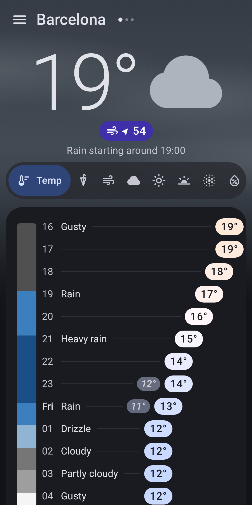
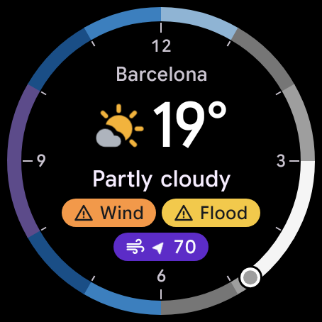

Skyline
The sky, hour by hour
The sky, hour by hour
A weather app for Android phones, tablets, and Wear OS watches. The current sky and only what's worth knowing, the next hours of each reading on one graph, rain in the next four hours with a map, official warnings, the week ahead, a widget, and a watch app and tile.
I made Skyline after more than 15 years of Android weather apps that were either hard to read or kept the good parts behind a subscription. Knowing the weather helps every day, and the forecasts come from free, open data such as Open-Meteo, so Skyline is free too: no ads, nothing to buy, no accounts, no tracking. It's the weather app I always wanted.
Skyline is in testing on Google Play. To try it, write with the Gmail address on your Android phone, and you'll get it from Play with its updates.

